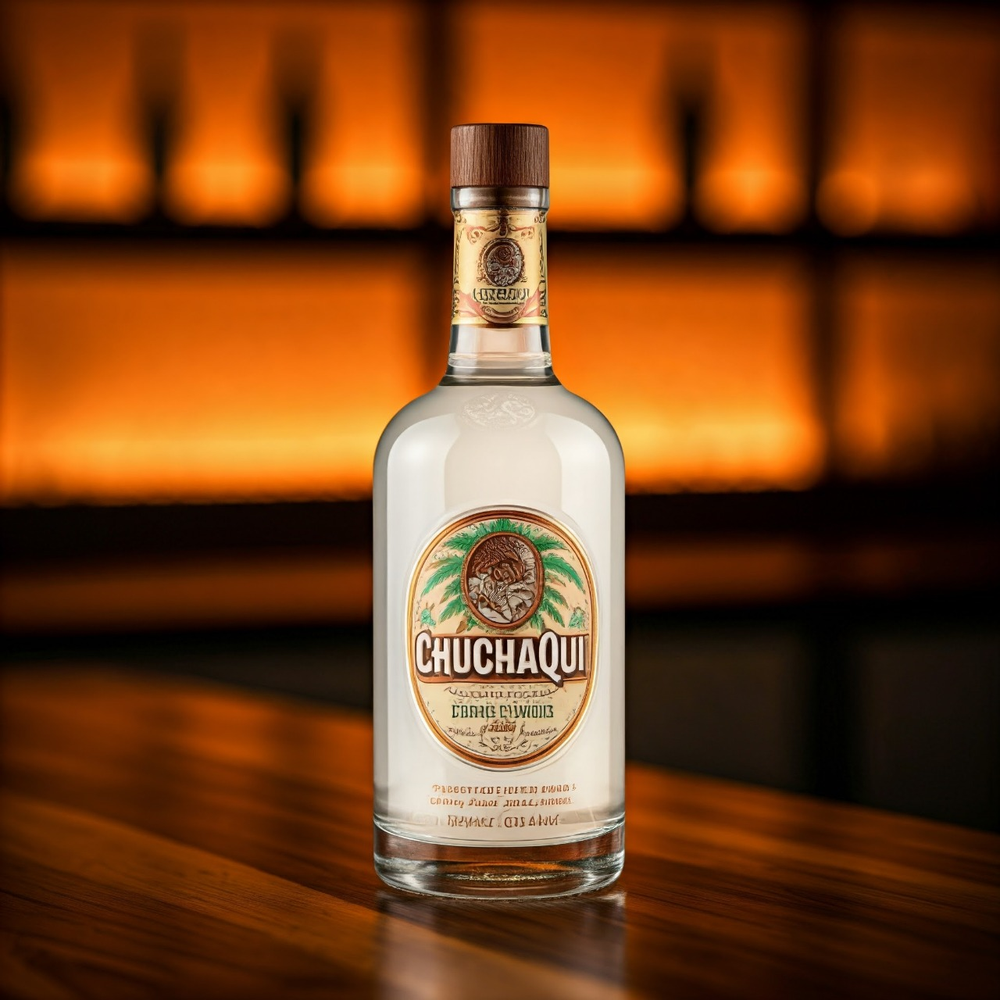
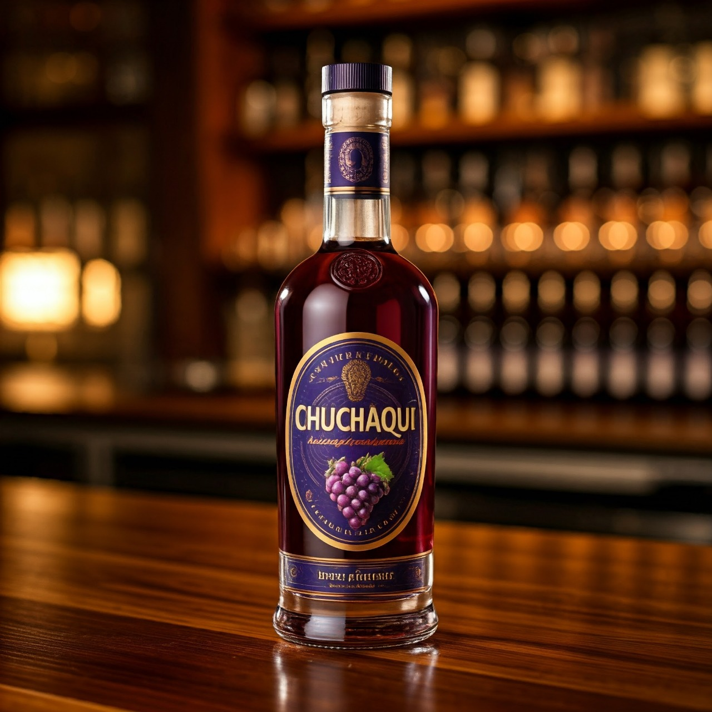
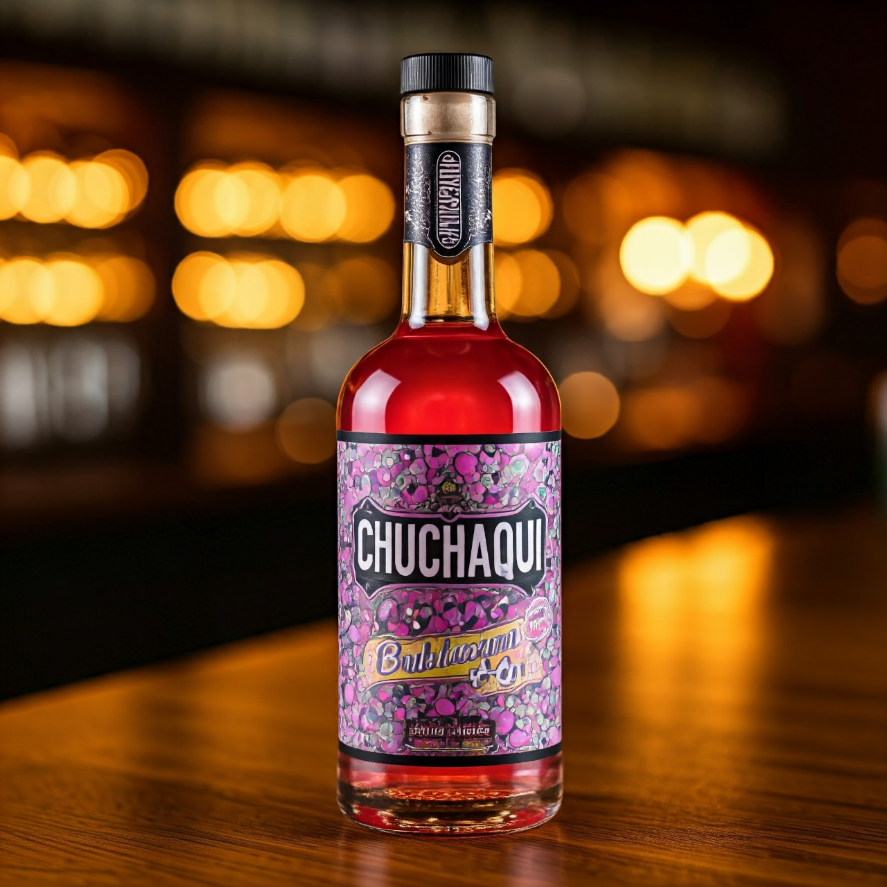
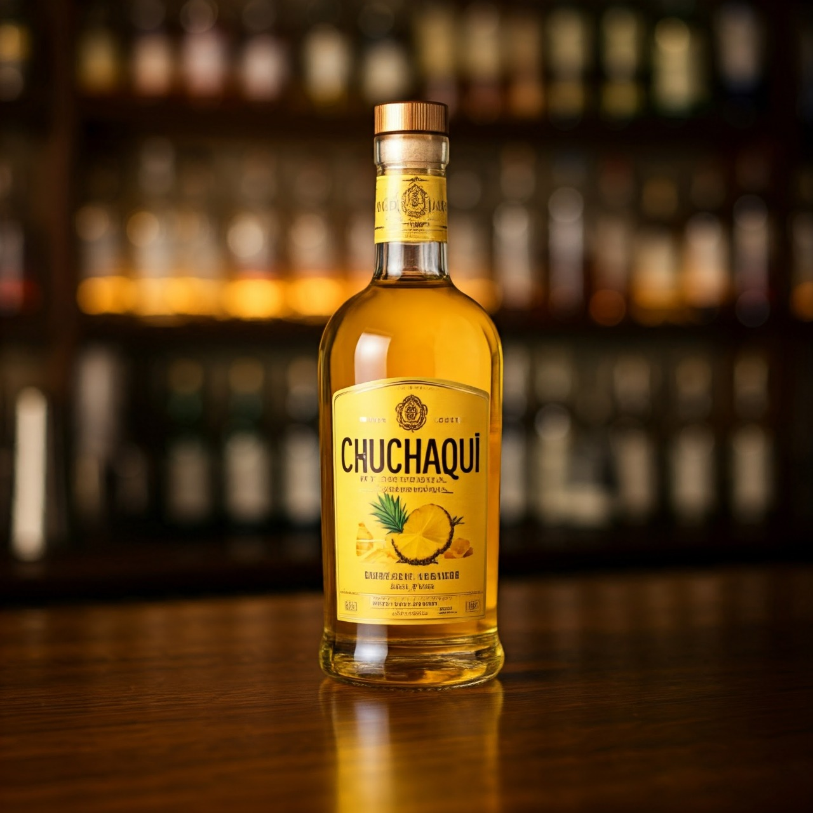
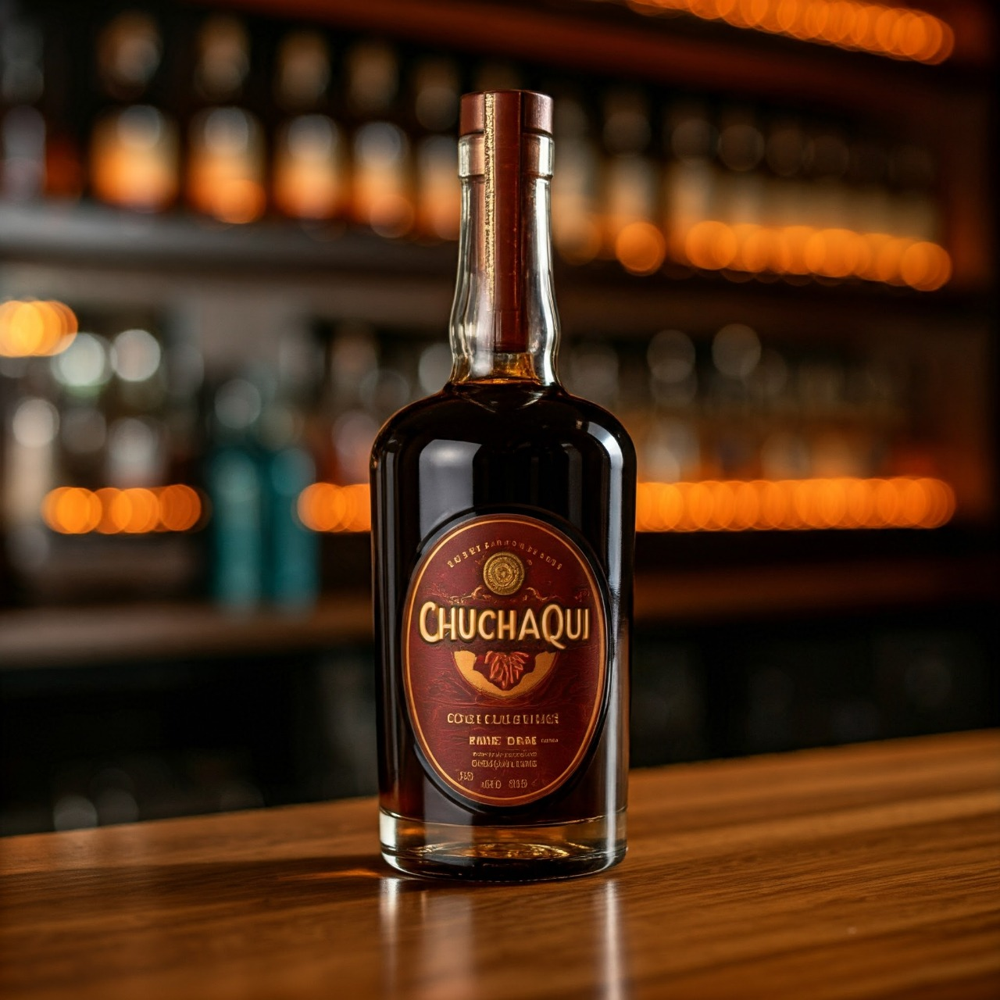
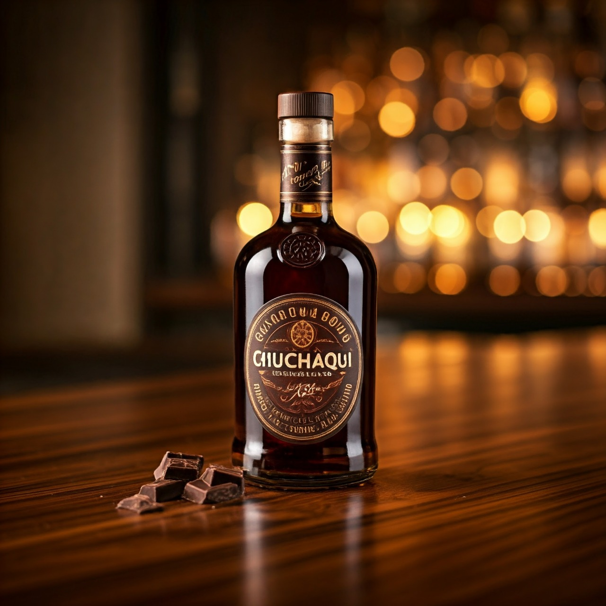

Aguardiente sabor a coco
Descubre el delicioso aguardiente sabor a coco, una bebida que combina la tradición con un toque tropical. Su perfil suave y aromático realza el sabor dulce y refrescante del coco, creando una experiencia única en cada sorbo. Ideal para disfrutar solo, en cócteles o para animar cualquier reunión.
Precio: $15.00
Aguardiente sabor de uva
Sumérgete en el sabor del aguardiente de uva, una bebida que destaca por su frescura y dulzura natural. Con un perfil afrutado y suave, evoca la esencia de las uvas recién cosechadas, ofreciendo una experiencia refrescante en cada sorbo. Perfecto para disfrutar solo o en cócteles, este aguardiente es ideal para añadir un toque especial a tus celebraciones.
Precio: $7.00
Aguardiente sabor chicle
Disfruta de la diversión y nostalgia del aguardiente sabor a chicle, una bebida que sorprende con su dulzura y frescura. Con un sabor juguetón que evoca los recuerdos de la infancia, cada sorbo es una explosión de sabor que deleita el paladar. Ideal para cócteles creativos o para disfrutar solo, este aguardiente añade un toque lúdico a cualquier reunión.
Precio: $9.00
Aguardiente sabor de piña
Disfruta del vibrante aguardiente sabor a piña, una bebida que evoca el frescor y la dulzura tropical de esta deliciosa fruta. Cada sorbo ofrece un sabor suave y afrutado que transporta a playas soleadas y momentos de celebración. Ideal para disfrutar solo, en cócteles refrescantes o como un toque especial en tus mezclas, este aguardiente añade un toque de alegría y frescura a cualquier ocasión.
Precio: $5.00
Aguardiente sabor a café
Descubra el cautivador sabor del aguardiente a café, una bebida que combina la intensidad del café recién tostado con la suavidad del aguardiente. Su aroma envolvente y sabor robusto crean una experiencia única en cada sorbo, ideal para los amantes del café. Perfecto para disfrutar solo, en cócteles o como un toque especial en postres, este aguardiente es una invitación a saborear momentos cálidos y reconfortantes.
Precio: $8.00
Aguardiente sabor a chocolate
Sumérgete en la indulgente experiencia del aguardiente sabor a chocolate, una bebida que combina la suavidad del aguardiente con la rica y reconfortante esencia del chocolate. Cada sorbo es un deleite para los sentidos, ofreciendo un equilibrio perfecto entre dulzura y profundidad. Ideal para disfrutar solo, en cócteles o como un toque especial en postres, este aguardiente es perfecto para quienes buscan una experiencia única y sofisticada.
Precio: $10.00